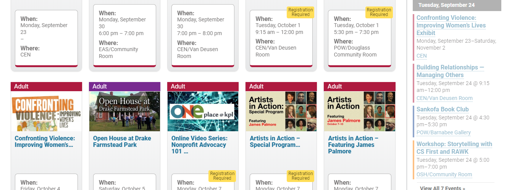
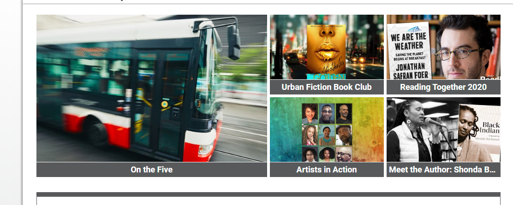

The website I reviewed for Evaluation 2 was the website for the Kalamazoo Public Library, in Kalamazoo, MI, found at www.kpl.gov. I chose this website because the Kalamazoo Public Library was where I had my first library job in the early 2000’s. I’ve seen several iterations of the website as it grew over the years, and as the website in general became more and more of a resource within the community. When I went to the website to complete this assignment, a pop-up came on my screen informing me that the website had undergone major changes, and it asked me if I wanted to take a tour or skip to the content. Considering I wanted to investigate the website on my own, I chose to skip to the content and start exploring. I noticed right away that the general style of the website, including color palette, font, layout, and background, had changed dramatically since I had last visited the website. In this iteration, I found the website to be user friendly, specifically vision friendly, and highly community oriented.
User Friendly
The user friendliness of the website was immediately apparent. If a patron wanting a specific book were to visit this website, they would clearly see where the website says “Search the Catalog” with an option to pick a format, type of search, then enter the search term. The user can do this without scrolling. If for some reason a user didn’t see that section, they can still easily accomplish searching by clicking on the Explore button, which opens an overlay menu with Catalog, Digital Catalog, and Additional Resources. Each of the items under Catalog are a bold color of the rainbow which matches the rainbow of the KPL logo, while the Digital Catalog’s items are indicated by a lighter, pastel version of the corresponding color. (I was excited to see that KPL has kept the band identity of the rainbow, which it has had for decades.) From the perspective of a patron searching for a book, here they can easily decide if they want to search for a physical copy or a digital copy, and can choose from:
general browse and search
audio and eaudio
books and ebooks
magazines and emagazines
music and emusic, and
videos and evideos.
Further, if a patron looking for a book wanted to see what staff is reading, they can scroll down a bit to staff picks, or explore further down to see the new DVDs, best sellers, and more.
Low Vision Patrons
I was also impressed by the visual appeal of the website, including how the website might appear to someone with low vision. If I were a patron with low vision, I would easily be able to navigate to find books, look at the events, see the branch locations and services offered. However, some of the visibility is limited. When searching for events, after choosing “Adult events” the website shows a listing of events that include a thumbnail for each event as well as the name of the event under the thumbnail then a section showing where and when the event is. This makes the website look a bit busy and cluttered when viewing this information in this immediate form, as there are 5 thumbnails across on my screen, and the fonts are not as large as other sections of the website (see figure 1).
Figure 1 - The events page's entries are a bit visually cluttered but are well-organized with a thumbnail, date, location, and link.
However, each event opens into its own page, where the information is more visually appealing and easy to read. Additionally, the website also uses color sparingly and with intention, the backgrounds are white with dark headers for high contrast, the layout and wireframing flows smoothly, and the headers are clearly visible and with a crisp, large, bold font.
Commuity Focus
Last, if I were a member of the community, I would feel welcome on KPL’s website. While I remember the scope of KPL’s website having included a community mind-set from my days working there, the community-centric features of the website have certainly broadened. Above the search feature on the main page is a section with one large box on the left featuring an image and a caption below it, which is a clickable link. To the right of this are four more quarter-sized images with captions, all to different events, blog posts, etc. (See figure 2 below.)
Figure 2 - The website is Community-Centered, as shown by the breadth of events, articles and blog posts displayed prominently on the landing page.
These are all community-centered. From the user perspective of a community member, this makes browsing the website very easy. I can go to the main page and see the five things without needing to scroll or click through to the events area. However, if I wanted to explore further down the page, I would see a section about “Confronting Violence” which is an advertisement for an exhibit in which the library partnered with Western Michigan University (my alma mater) to bring this travelling exhibit from the National Library of Medicine to the community. In looking at the summary of their strategic plan, one of their core values is having a community focus (see https://www.kpl.gov/about/the-kpl-plan).
Conclusion
Overall, KPL’s website overhaul is very user-friendly, including stylistic choices that can benefit low-vision patrons. The content is highly community-centered, which shows how central the library is to the community. While the scope of the website covers the same topics as it did when I worked there, the broadness of that scope has increased, with more content, particularly by way of blog posts and events.